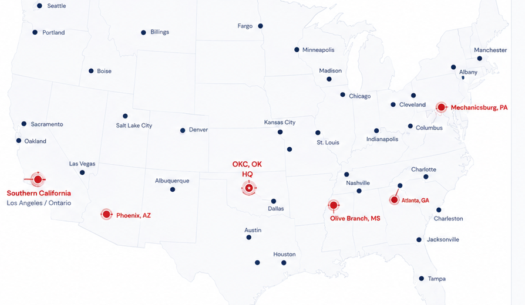

Full Asset Management
Asset visibility, work orders, compliance, reporting, and FreedomFleet.
FLSS manages trailer fleet execution at scale — standardized, compliant, and fully visible — so your team gains control and transparency without carrying the operational load.

Most enterprise trailer maintenance is spread across disconnected vendors: reactive, inconsistent market to market, and difficult to see into. FLSS replaces that with a single accountable operating model for trailer fleet execution — one standard, one partner, one source of truth.
Outsourcing execution shouldn't mean giving up control. The operating model is built so you keep authority over how your fleet is maintained — and see everything as it happens.
Repairs above the thresholds you define require your approval before any work proceeds.
Programs are configured to your operating requirements — collaboratively, not from a fixed template.
Published standard repair times keep labor consistent and comparable across every market.
A standardized national labor-rate approach removes market-by-market pricing surprises.
Every service event is documented, so you can verify what was done and why.
Real-time asset status, work orders, and history — full operational transparency for your team.
Three operating principles make execution consistent, controllable, and visible at enterprise scale.
One national labor rate. Standard repair times. Consistent execution across every market.
Customer approval thresholds. Collaborative maintenance standards. Programs configured around your operating requirements.
Before & after documentation. Asset history tracking. Complete visibility through FreedomFleet.
A nationwide customer deployment model puts dedicated teams and pod markets where your assets actually operate — so coverage and accountability never depend on the market you happen to be in.

The operating model is judged on results — and built to report them honestly.
Reflecting an operating model that keeps roughly 4% of a customer's fleet in active maintenance at any given time.
Programs are designed to maintain full DOT compliance through proactive inspection scheduling, execution, and customer collaboration.
Measured over an 18-month period across an enterprise fleet of more than 3,000 trailers, through standardized maintenance execution and proactive fleet management.
FreedomFleet is the shared operating platform between FLSS and your team — the single source of truth for every managed asset, so visibility, compliance, and execution stay in sync.
Full-spectrum trailer maintenance and fleet services — delivered as part of one accountable operating model, not as disconnected point services.
Asset visibility, work orders, compliance, reporting, and FreedomFleet.
Inspection programs, compliance management, preventive maintenance.
Scheduled and unscheduled repairs nationwide.
Emergency breakdown support and recovery.
Commercial Bridgestone dealer. Roadside support. National pricing.
Installations, monitoring, device health, GPS, cargo sensors, TPMS, door sensors.
Decals, inspections, telematics installs, fleet launches.
Mass deployments, recalls, retrofits, sensor installs.
FLSS is led by a team with 100+ years of combined experience across trailer leasing, fleet maintenance, asset management, transportation operations, and enterprise fleet leadership — the people who have run programs at this scale, now accountable for yours.
A structured review of your current trailer maintenance operation — coverage, compliance, cost, and visibility — and how an accountable operating model would manage it. The beginning of an enterprise conversation, not a sales call.
Request a Fleet Program Review